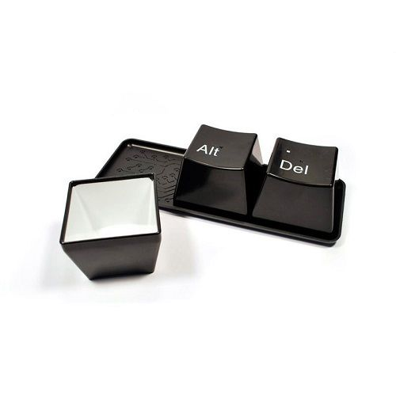

En Linux, la importancia de Bash es innegable. En el trabajo diario, la gestión y operación de Linux se realiza básicamente en Bash. Por lo tanto, para mejorar la eficiencia laboral en Linux, la cuestión se convierte naturalmente en cómo usar Bash de manera eficiente. Utilizar algunos atajos de teclado en Bash es la forma más sencilla y directa de mejorar la eficiencia. ¡Este artículo tiene precisamente ese objetivo!

Algunas explicaciones sobre los atajos de teclado:
- CTRL=C: Esta tecla se refiere a la tecla Ctrl del teclado de una PC.
- ALT=M: Esta tecla es la tecla ALT del teclado de PC. Si tu teclado no tiene esta tecla, puedes intentar usar la tecla ESC en su lugar.
- SHIFT=S: Esta tecla es la tecla Shift en PC.
- ESC=E: Esta tecla es la tecla ESC del teclado de PC; generalmente se encuentra en la esquina superior izquierda del teclado.
- BACKSPACE=DEL: Esta tecla es la tecla Retroceso (Backspace) del teclado de PC; generalmente se encuentra en la esquina superior derecha del área principal del teclado.
- En el texto, el contenido entre '[]' es el atajo de teclado. El contenido a ambos lados de '-' significa mantener presionada la tecla izquierda y luego presionar la tecla derecha. El contenido a ambos lados de ',' significa presionar primero la tecla izquierda, soltarla y luego presionar la tecla derecha. Por ejemplo: [CTRL-v] indica que después de presionar la tecla Ctrl, sin soltarla, se presione la tecla v.
- De forma predeterminada, el formato de composición de un atajo es: <CTRL | ALT | ESC >-[SHIFT-]<char>. Es decir, comienza con uno de Ctrl, Alt o Esc, seguido de un guion, Shift, un guion y un carácter. Entre ellos, la tecla Shift y el '-' entre corchetes a veces se pueden omitir.
- De forma predeterminada, en un atajo solo el último elemento es un carácter; los demás valores de tecla son teclas de función.
- Cuando aparece un atajo como [CTRL-?], dado que '?' es un carácter que requiere usar la tecla Shift para obtenerlo, este tipo de atajo usa por defecto [CTRL-SHIFT-?].
Ten en cuenta que en Bash, los atajos pueden escribirse en formato octal o hexadecimal (después del carácter de escape); los atajos en archivos de script no siempre funcionan. Además, los atajos tienen una regla:Los atajos que comienzan con Ctrl generalmente funcionan sobre caracteres, mientras que los que comienzan con Alt generalmente funcionan sobre palabras.。
En Bash, si se usa un archivo de script de shell, los atajos no son necesariamente los mismos; a veces un mismo atajo puede tener comportamientos diferentes. Esto generalmente se debe a que Bash se encuentra en un modo diferente. Puedes ajustar el modo mediante el comando set:
set -o emacs ##切到emacs模式 set -o vi ##切到vi模式 set -o ## 查看当前选项的设置状态
Esta es la opción de Bash; puedes configurarla según la situación específica. Este artículo usa el modo emacs.
| Atajo de teclado | Descripción del atajo de teclado |
|---|---|
| CTRL-A | Mueve el cursor al inicio de la línea (en la línea de comandos). |
| CTRL-B | Retroceso (no destructivo): solo mueve el cursor una posición hacia atrás. |
| CTRL-C | Interrupción: finaliza un trabajo en primer plano. |
| CTRL-D | EOF (fin de archivo: end of file). Se utiliza para indicar el final de la entrada estándar (stdin). Al ingresar texto en la consola o en una ventana xterm, CTRL-D elimina el carácter bajo el cursor.
Sale de un shell (similar a exit). Si no hay caracteres presentes, CTRL-D cierra la sesión. En una ventana xterm, produce el efecto de cerrar dicha ventana. |
| CTRL-E | Mueve el cursor al final de la línea (en la línea de comandos). |
| CTRL-F | Mueve el cursor un carácter hacia adelante (en la línea de comandos). |
| CTRL-G | BEL. En algunas terminales de impresora antiguas, esto provoca un timbre. En una terminal xterm puede ser un pitido. |
| CTRL-H | Borrar (Rubout) (retroceso destructivo). Al mover el cursor hacia atrás, borra simultáneamente el carácter anterior al cursor. |
| CTRL-I | Tabulación horizontal. |
| CTRL-J | Nueva línea (avance de línea [line feed] y al inicio de línea). En scripts, también puede representarse en forma octal ('/012') o hexadecimal ('/x0a'). |
| CTRL-K | Tabulación vertical (Vertical tab). Al ingresar texto en la consola o en una ventana xterm, CTRL-K elimina todos los caracteres desde la posición del cursor hasta el final de la línea.
En scripts, también puede representarse en forma octal ('/013') o hexadecimal ('/x0b'). En scripts, CTRL-K puede tener un comportamiento diferente; el siguiente ejemplo muestra su comportamiento diferente: #!/bin/bash ## 一个CTRL-K垂直制表符的例子 var=$'/x0aBottom Line/x0bTop line/x0a' ## 直接输出 echo "$var" ## 使用col来过滤控制字符 echo "$var" | col ## 上面的显示将会不一样 exit 0 |
| CTRL-L | Salto de página, avance de formulario (Formfeed), limpiar pantalla.
Limpia la pantalla de la terminal. En la terminal, este comando tiene el mismo efecto que el comando clear. Pero cuando este comando se envía a una impresora, Ctrl-L salta directamente al final de la hoja de papel. |
| CTRL-M | Retorno de carro (Carriage return). |
| CTRL-N | Borra una línea de texto recuperada del búfer de historial (en la línea de comandos). Si la entrada actual es una selección del historial, esto comienza desde ese historial y, cada vez que se presiona, es un comando más reciente. |
| CTRL-O | Produce una nueva línea (en la línea de comandos). |
| CTRL-P | Recupera el comando anterior del búfer de historial (en la línea de comandos). Este atajo recupera en orden de más reciente a más antiguo; es decir, al presionarlo una vez recupera el comando inmediatamente anterior, y al presionarlo nuevamente recupera el comando anterior a ese. Tanto este como CTRL-N toman como punto de partida la entrada actual, pero las dos operaciones son exactamente opuestas: CTRL-N va de más antiguo a más reciente desde el punto de partida (si el punto de partida es un comando del historial). |
| CTRL-Q | Reanudar (XON). Reanudar/descongelar: este comando se usa para restaurar el stdin de la terminal. Consulta CTRL-S. |
| CTRL-R | Búsqueda hacia atrás (Backwards search) del texto en el búfer de historial (en la línea de comandos). Nota: después de presionarlo, el prompt se convierte en (reverse-i-search)': el texto de búsqueda ingresado aparece entre comillas simples, y después de los dos puntos aparece el comando histórico más reciente que coincida. |
| CTRL-S | Suspender (XOFF), suspensión. Esto congela el stdin de la terminal. Para reanudar, puedes presionar CTRL-Q. |
| CTRL-T | Intercambia el carácter en la posición del cursor con el de la posición anterior al cursor (en la línea de comandos). Por ejemplo: echo $var; supongamos que el cursor está sobre la 'a'; al presionar C-T, la 'v' y la 'a' intercambiarán posiciones: echo $avr;. |
| CTRL-U | Borra todo el contenido desde la posición del cursor hasta el inicio de la línea. En algunas configuraciones, CTRL-U elimina toda la línea de entrada sin tener en cuenta la posición del cursor. |
| CTRL-V | Al ingresar texto, después de presionar C-V, se pueden insertar caracteres de control. Por ejemplo: echo -e '/x0a'; y echo <CTRL-V><CTRL-J>; ambos tienen el mismo efecto. Esta función es muy útil en editores de texto. |
| CTRL-W | Al escribir texto en la consola o en una ventana xterm, CTRL-W elimina el contenido desde el cursor hacia atrás hasta el primer espacio en blanco. En algunas configuraciones, CTRL-W elimina desde el cursor hacia atrás hasta el primer carácter que no sea letra ni número. |
| CTRL-X | En algunos programas de procesamiento de texto, este carácter de control cortará el texto resaltado y lo copiará al portapapeles. |
| CTRL-Y | Pega el texto previamente borrado (principalmente con CTRL-U o CTRL-W). |
| CTRL-Z | Pausa un trabajo en primer plano; en algunos procesadores de texto también actúa como operación de reemplazo; en el sistema de archivos MSDOS se usa como carácter EOF (fin de archivo). |
| CTRL-/ | Salir. Similar a CTRL-C, también puede volcar un archivo 'core' en tu directorio de trabajo (este archivo probablemente no te sea útil). |
| CTRL-/ | Deshacer operación, Undo. |
| CTRL-_ | Deshacer operación. |
| CTRL-xx | Alterna entre el inicio de la línea y la posición del cursor; aquí hay dos caracteres 'x'. |
| ALT-B | El cursor salta una palabra hacia atrás; las palabras están delimitadas por caracteres no alfabéticos (salta al inicio de la palabra donde se encuentra el cursor). |
| ALT-F | El cursor salta una palabra hacia adelante (se mueve al final de la palabra donde se encuentra el cursor). |
| ALT-D | Elimina todo el contenido desde la posición del cursor hasta el final de la palabra donde se encuentra el cursor (si el cursor está al inicio de la palabra, elimina toda la palabra). |
| ALT-BASKSPACE | Elimina todo el contenido desde la posición del cursor hasta el inicio de la palabra. |
| ALT-C | Convierte la letra en la posición del cursor a mayúscula (si el cursor está al inicio de una palabra o antes, convierte la primera letra de la palabra a mayúscula). |
| ALT-U | Convierte a mayúsculas todas las letras desde la posición del cursor hasta el final de la palabra. |
| ALT-L | Convierte a minúsculas todas las letras desde la posición del cursor hasta el final de la palabra. |
| ALT-R | Cancela todos los cambios y restaura la línea actual a su estado original en el historial (siempre que el comando actual provenga del historial; si se ingresó manualmente, vaciará la línea). |
| ALT-T | Cuando hay palabras a ambos lados del cursor, intercambia las posiciones de las palabras a ambos lados del cursor. Por ejemplo: abc <ALT-T>bcd -> bcd abc |
| ALT-. | Usa la última palabra del comando anterior (el comando en sí mismo también es una palabra; consulta el concepto de indicador de palabra en el comando Bang del artículo siguiente). |
| ALT-_ | Igual que ALT-. |
| ALT-número | Este valor numérico puede ser positivo o negativo. Esta tecla por sí sola no tiene efecto; debe ir seguida de otro contenido. Si va seguida de un carácter, indica el número de repeticiones. Por ejemplo: [ALT-10,k] inserta 10 caracteres 'k' en la posición del cursor (los valores negativos no son válidos en este caso). Si va seguida de un comando, el número afecta el resultado de ejecución del comando posterior. Por ejemplo: [ALT--10,CTRL-D] ejecuta 10 operaciones en la dirección opuesta a la predeterminada de CTRL-D (para números negativos). |
| ALT-< | Se mueve a la primera línea de comando del historial. |
| ALT-> | Se mueve a la última línea del historial, es decir, la línea que se está ingresando actualmente (vacía si no hay entrada). |
| ALT-P | Busca hacia adelante desde la línea actual; si es necesario, se mueve hacia 'arriba'. Durante el movimiento, utiliza una búsqueda no incremental para encontrar la cadena proporcionada por el usuario. |
| ALT-N | Busca hacia adelante desde la línea actual, moviéndose hacia "abajo" si es necesario; al moverse, utiliza una búsqueda no incremental para encontrar la cadena proporcionada por el usuario. |
| ALT-CTRL-Y | Inserta el primer argumento del comando anterior (generalmente la segunda palabra de la línea anterior) en el punto de inserción. Si se proporciona el parámetro n, inserta la enésima palabra del comando anterior (la numeración de palabras de la línea anterior comienza en 0; ver expansión del historial). Un parámetro negativo inserta la enésima palabra contando desde el final del comando anterior. El parámetro n se pasa mediante M-No., por ejemplo: [ALT-0,ALT-CTRL-Y] inserta la palabra 0 del comando anterior (el propio comando). |
| ALT-Y | Rota el anillo de borrado y copia el nuevo texto superior. Este comando solo se puede usar después de yank [CTRL-Y] o yank-pop [M-Y]. |
| ALT-? | Enumera las entradas que pueden completar el texto anterior al punto de inserción. |
| ALT-* | Inserta antes del punto de inserción todas las entradas de texto que el comando [ALT-?] puede generar para la finalización. |
| ALT-/ | Intenta realizar la finalización de nombres de archivo para el texto anterior al punto de inserción. [CTRL-X,/] trata el texto anterior al punto de inserción como un nombre de archivo y enumera las entradas que se pueden completar. |
| ALT-~ | Trata el texto anterior al punto de inserción como un nombre de usuario e intenta completarlo. [CTRL-X,~] enumera las entradas que pueden completar el texto anterior al punto de inserción como nombre de usuario. |
| ALT-$ | Trata el texto anterior al punto de inserción como una variable de Shell e intenta completarlo. [CTRL-X,$] enumera las entradas que pueden completar el texto anterior al punto de inserción como variable. |
| ALT-@ | Trata el texto anterior al punto de inserción como un nombre de host e intenta completarlo. [CTRL-X,@] enumera las entradas que pueden completar el texto anterior al punto de inserción como nombre de host. |
| ALT-! | Trata el texto anterior al punto de inserción como un nombre de comando e intenta completarlo. Para la finalización de nombres de comando, se utilizan en orden: alias, palabras reservadas, funciones de Shell, comandos internos de shell y, por último, nombres de archivos ejecutables. [CTRL-X,!] trata el texto anterior al punto de inserción como un nombre de comando y enumera las entradas que se pueden completar. |
| ALT-TAB | Compara el texto anterior al punto de inserción con el texto del historial para encontrar coincidencias e intenta completarlo. |
| ALT-{ | Realiza la finalización de nombres de archivo y coloca la lista de entradas completables entre llaves, para que el shell pueda usarla. |
En Bash, si se usan adecuadamente los atajos de teclado, las operaciones en sistemas Linux se vuelven muy rápidas. Por ejemplo, al crear un archivo con cat, podemos usar el atajo [CTRL-D]:
## 不用快捷键 cat >>/tmp/test<<_EOF ##这里是内容 ##最后我们要在新行里面输入_EOF ##cat见到_EOF才会将内容写到文件中 ##使用快捷键 cat >>/tmp/test ##这里输入内容 ##输入完毕之后，直接[CTRL-D]结束
A veces necesitamos crear un archivo y luego operar sobre él:
touch /tmp/a-test-file-from-blog.useasp.net ## 不使用快捷键，文件名要重新输入 chmod u+x /tmp/a-test-file-from-blog.useasp.net ##使用快捷键 chmod u+x <ALT-.> ## 快捷键[M-.]自动会将上面的最后一个参数附加
¿Qué tal? ¿No es más eficiente?
Por supuesto, los atajos de teclado de Bash solo alcanzan una verdadera eficiencia con el uso continuo. Al principio, cuando hay que pensar durante un buen rato incluso en qué atajo usar, es difícil ser eficiente, pero como dice el refrán, afilar el hacha no retrasa el corte de leña; la inversión inicial vale la pena.
Si quieres que tu Bash sea un poco diferente, también puedes personalizar los atajos de teclado usando el comando bind. Los atajos de teclado en Bash en realidad los proporciona Readline, por lo que configurar los atajos aquí es en realidad configurar Readline. En Readline hay dos tipos de atajos: uno son los atajos de funciones internas de Readline, y el otro ejecuta comandos de Shell; la configuración es ligeramente diferente:
##查看Readline中可以使用的函数名称 bind -l ##查看当前绑定的案件配置与其对应的功能 bind -v ##已经绑定的快捷键 bind -p ##绑定自定义执行命令shell命令的快捷键 bind -x '"/C-x/C-l":ls -al' ## 绑定后，按[C-x,C-L]就能执行ls -al ## 绑定内置函数功能 bind "/C-x":backword-delte-char ##这个是这行Readline库中的函数backword-delte-char
Esta configuración solo es válida para la sesión actual; una vez que la sesión se pierde, los atajos configurados de esta manera se pierden. Para que los atajos configurados sean permanentes, debemos escribir la configuración de atajos en un archivo. En los sistemas Linux, hay dos lugares donde se pueden guardar permanentemente los atajos: la configuración global y la del usuario. La global es /etc/inputrc, y la del usuario está en el directorio raíz del usuario, ~/.inputrc. La global afecta a todos los usuarios, mientras que la del directorio raíz del usuario solo afecta al usuario correspondiente. El archivo inputrc tiene un aspecto similar al siguiente:
## 本例来自CentOS6.4的默认配置文件 $if mode=emacs # for linux console and RH/Debian xterm "/e[1~": beginning-of-line "/e[4~": end-of-line # commented out keymappings for pgup/pgdown to reach begin/end of history #"/e[5~": beginning-of-history #"/e[6~": end-of-history "/e[5~": history-search-backward "/e[6~": history-search-forward "/e[3~": delete-char "/e[2~": quoted-insert "/e[5C": forward-word "/e[5D": backward-word "/e[1;5C": forward-word "/e[1;5D": backward-word # for rxvt "/e[8~": end-of-line "/eOc": forward-word "/eOd": backward-word # for non RH/Debian xterm, can't hurt for RH/DEbian xterm "/eOH": beginning-of-line "/eOF": end-of-line # for freebsd console "/e[H": beginning-of-line "/e[F": end-of-line $endif
Explicación:
- En el archivo de configuración, /C representa CTRL, /M representa ALT, /e representa ESC, // es la barra invertida /, /' es la comilla simple, /" es la comilla doble;
/C- control prefix /M- meta prefix /e an escape character // backslash /" literal ", a double quote /’ literal ’, a single quote
- Para ver la secuencia de caracteres de una tecla de función, se puede hacer con [CTRL-V], o bien, después de escribir cat y pulsar Enter, entrar en el modo de edición y pulsar directamente el atajo de teclado.
- En el archivo de configuración se pueden usar valores octales o hexadecimales para representar caracteres.
Si configuramos atajos adecuados para las operaciones de uso común, tal vez los comandos que antes requerían teclear sin parar durante medio día los puedas resolver con un solo atajo. Sin duda, ¡esto mejorará enormemente nuestra eficiencia en el trabajo! ¡Usa atajos de teclado, muchacho!
Fuente: http://www.codeceo.com/article/bash-shortcut.html
花菜
lih***ai168@gmail.com
Dirección de referencia
Si lo que quieres es que ctrl + u elimine desde el cursor hasta el inicio de la línea, en lugar de eliminar toda la línea, prueba esta configuración (aquí es zsh).
花菜
lih***ai168@gmail.com
Dirección de referencia